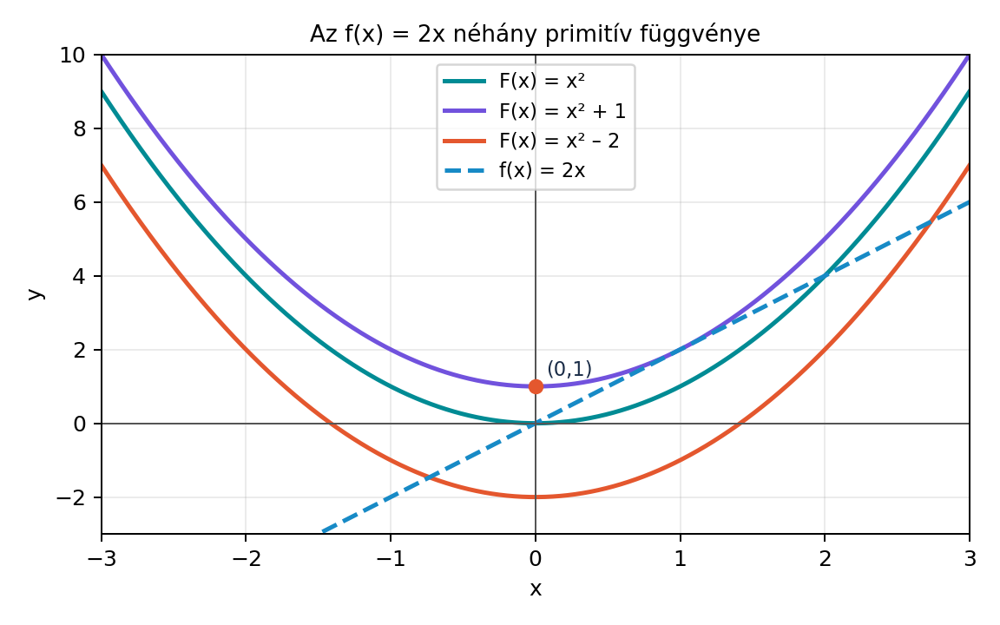

A differenciálás segítségével egy mennyiség változási
sebességét tudjuk meghatározni: ha ismerjük az autó út–idő
függvényét
-t,
akkor a pillanatnyi sebesség
.
A gyakorlatban azonban gyakran fordított a kérdés: mérjük a sebességet
(például GPS-szel vagy radarral), és vissza akarjuk nyerni a megtett
utat; ismerjük a gyorsulást, és a sebességet keressük; tudjuk, hogy egy
tartályban a vízszint milyen ütemben emelkedik, és magát a vízszintet
szeretnénk előrejelezni.
Ez a primitív függvény problémája: adott az
függvény, keressük azt az
függvényt, amelynek deriváltja
.
A módszer a differenciálás megfordítása, ezért a deriválttáblázatunkból
azonnal felépíthetjük az alapintegrálok táblázatát.
Ugyanakkor rögtön látni fogjuk: a megfordítás nem egyértelmű, mert a
konstans deriváltja nulla – ez a bizonytalanság az, amit egy
kezdeti feltétel (például
)
megszüntet.
14.1.2 Szemléletes kép
Tekintsük a legismertebb példát. Ha
,
akkor
deriváltja éppen
.
Ugyanakkor
,
,
sőt
is ugyanazt a deriváltat adja, hiszen a konstans deriváltja
.
Az
függvény tehát nem egyetlen primitív függvényt határoz meg, hanem egy
egész függvénycsaládot, amelynek tagjai grafikonjai
csak függőleges eltolásban különböznek egymástól.

Az f(x) = 2x néhány primitív függvénye -
A szaggatott kék görbe az f(x)=2x derivált; a többi görbe párhuzamos
eltolással kapható, mindegyik érintőjének meredeksége 2x.
Az ábrán látható, hogy bármelyik primitív függvény grafikonjának
ugyanazon
helyen vett érintője ugyanolyan meredekségű, hiszen a meredekség
mindegyiknél
.
A megoldások tehát egyetlen függvény függőleges
eltolásai.
14.1.3 A primitív függvény és a
határozatlan integrál
Definíció. Legyen
egy (véges vagy végtelen) intervallum, és
adott függvény. Az
függvényt
primitív függvényének (antiderivative) nevezzük az
intervallumon, ha
differenciálható
-n,
és minden
esetén
Ha
primitív függvénye
-nek
az
intervallumon, akkor
is az, tetszőleges
konstanssal, hiszen
.
Definíció. Az
függvény határozatlan integrálját (indefinite integral)
a
képlet adja, ahol
egy tetszőleges primitív függvénye
-nek,
és
az integrálási konstans. A határozatlan integrál tehát
az összes primitív függvény halmazát jelöli.
A következő tétel megmutatja, hogy a
-nél
nincs több bizonytalanság: két primitív függvény tényleg csak
konstansban térhet el.
Tétel. Ha
és
mindketten primitív függvényei az
függvénynek ugyanazon az
intervallumon, akkor létezik olyan
konstans, hogy minden
esetén
Bizonyítás. Tekintsük a
függvényt. Mivel
és
is differenciálható,
is differenciálható, és
minden
-re.
Azt kell belátnunk, hogy ha egy függvény deriváltja az intervallum
minden pontján nulla, akkor a függvény konstans. Ehhez használjuk a
Lagrange-féle középértéktételt (lásd Lagrange- és
Cauchy-féle középértéktétel, monotonitás): ha
,
,
akkor létezik olyan
,
amelyre
Ebből
,
azaz
.
Mivel ez bármely két
-beli
pontra igaz,
értéke állandó, tehát létezik
,
hogy
,
azaz
minden
-re.
∎
Következmény. Ha
-nek
van egy
primitív függvénye az
intervallumon, akkor az
összes primitív függvénye
alakú, ahol
egy rögzített primitív függvény. (Hogy folytonos
-nek
mindig van primitív függvénye, azt Az analízis
alaptétele és a Newton–Leibniz-formula alfejezetben látjuk.)
A tétel feltétele fontos: az
-nek
intervallumnak kell lennie. Ha a függvényt két
különálló intervallumon vizsgáljuk, a konstans intervallumonként
eltérhet, amint azt az
esetén látni fogjuk.
14.1.4 Alapintegrálok
táblázata
A deriválttáblázatot megfordítva kapjuk az alapintegrálok táblázatát.
A következő táblázatban a szokásos feltételek mellett
tetszőleges valós konstans.
A táblázat minden sora a deriválttáblázat megfordítása, ezért
ellenőrzése deriválással történhet. Például
,
ha
.
A
esetében két esetet különböztetünk meg: ha
,
akkor
;
ha
,
akkor
.
Ezért
primitív függvénye
-nek
mind a pozitív, mind a negatív számok intervallumán, de a
-t
tartalmazó intervallumon nem, mert ott az
nem értelmezett.
Figyelem. Az
képlet két külön intervallumra érvényes: a
-re
és a
-re.
Ha a függvényt a
halmazon tekintjük, akkor a konstans intervallumonként eltérhet:
a pozitív oldalon,
a negatív oldalon. Ezt a Szétválasztható változójú
egyenletek alfejezet is használja.
14.1.5 Linearitás és a leggyakoribb
minták
Tétel (linearitás). Ha
és
primitív függvénnyel rendelkezik az
intervallumon, és
,
akkor
Bizonyítás. Legyen
és
.
Ekkor
tehát
primitív függvénye
-nek.
∎
A linearitás azt jelenti, hogy összeget tagonként, konstans szorzót
kiemelve integrálhatunk. Két további gyakori minta adódik a
láncszabályból.
Állítás. Ha
differenciálható az
intervallumon, és
minden
-re,
akkor
Ha pedig
valós szám, és
minden
-re
(egész
esetén ez a feltétel elhagyható, negatív egész
-nál
kell), akkor
Bizonyítás. Az első képlet a láncszabályból: ha
,
akkor
;
ha
,
akkor
.
A második: a láncszabály szerint
∎
Ezek a formulák az Integrálás
helyettesítéssel alfejezet módszerének speciális esetei, és
rendkívül gyakoriak.
Példa. Számítsuk ki az
határozatlan integrált.
Megoldás. A linearitás és az
formula szerint:
Ellenőrzés deriválással:
,
ami éppen a kiindulási függvény. ∎
Példa. Határozzuk meg a
integrált.
Megoldás. Itt a számláló éppen az
deriváltja, hiszen
.
Ezért
választással az
mintára ismerünk:
mert
minden
-re.
Az abszolútérték ilyenkor elhagyható. Ellenőrzés:
.
∎
Példa. Számítsuk ki az
integrált.
Megoldás. Mivel
,
az integrandus
-nek
és a belső függvény deriváltjának szorzata,
-vel
szorozva:
.
Ez egyik fenti mintának sem speciális esete, de a láncszabály
megfordításából adódik:
,
ezért
.
Itt
,
és a hiányzó
-es
szorzót kiegyenlítjük:
Az alapfeladatok megoldásához a következő lépéseket érdemes
követni.
Azonosítsd az alapintegrált. Nézd meg, hogy az
integrandus (vagy annak egy része) szerepel-e az
alapintegrál-táblázatban. Ha igen, alkalmazd a megfelelő képletet.
Bontsd fel tagokra. Használd a linearitást:
.
A konstans szorzókat emeld ki.
Keresd az
vagy
mintát. Ha a függvényben egy kifejezés deriváltja is
megjelenik, próbáld az említett formulákat alkalmazni, vagy vezess be
helyettesítést (lásd később az Integrálás
helyettesítéssel alfejezetben).
Írd hozzá a konstans
-t.
A határozatlan integrál mindig tartalmazza az integrálási
konstanst.
Ellenőrizz deriválással. Deriváld az eredményt; ha
visszakapod az integrandust, jó a megoldás. Ez a lépés sok hibát
kiszűr.
Kezdeti feltétel esetén határozd meg
-t.
Ha adott
,
helyettesítsd be, oldd meg
-re,
és írd fel a konkrét primitív függvényt.
14.1.7 Kezdeti feltétel: az
integrálási konstans meghatározása
A gyakorlatban a derivált (például sebesség vagy gyorsulás) ismeretén
túl általában ismerünk egy kezdeti értéket is, amely
kiválasztja a primitív függvények közül a konkrét megoldást.
Példa (sebességből hely). Egy pontszerű test
sebessége
m/s, és a test a
s időpillanatban az
m helyen van. Határozzuk meg az
út–idő függvényt.
Megoldás. Az út a sebesség primitív függvénye:
A kezdeti feltétel
.
Helyettesítsünk be
-et:
Így a megoldás:
Ellenőrzés:
,
és
,
tehát a kezdeti feltétel teljesül. ∎
Példa (gyorsulásból sebesség). Egy rakéta gyorsulása
m/s², és
m/s,
m. Adjuk meg a sebességet és a helyet az idő függvényében.
Megoldás. Először a sebességet integráljuk:
A
feltételből
,
tehát
,
így
m/s. Most a helyet:
Az
feltételből
,
tehát
méter. Ellenőrzés:
,
és
,
valamint
.
∎
14.1.8 Valós életbeli alkalmazás:
fékező autó útja állandó lassulásnál
A primitív függvény fogalma nélkül a fékút-számítás is
megoldhatatlan: ha ismerjük a jármű lassulását, integrálással kapjuk
vissza a sebességet, majd újabb integrálással az utat.
Tegyük fel, hogy egy autó állandó
lassulással fékez. A kezdeti sebesség
(),
a kezdeti hely legyen
.
Keressük, mennyi utat tesz meg a megállásig.
1. lépés: a sebességfüggvény meghatározása.
A gyorsulás a sebesség deriváltja, ezért
A kezdeti feltétel
:
Így
2. lépés: a megállás időpontja.
A jármű akkor áll meg, amikor
:
3. lépés: a megtett út.
A hely a sebesség primitív függvénye:
Mivel
,
azonnal
,
tehát
A fékút a megállás pillanatában:
Értelmezés és a modell korlátai. A kapott
méter reális egy vészfékezésre száraz úton, de a valóságban a lassulás
nem pontosan állandó: a tapadás, a jármű terhelése, a gumiabroncs
állapota és a reakcióidő is befolyásolja. A modell mégis jó első
közelítés, és a számolás lépéseit – integrálás, kezdeti feltétel
beillesztése – minden hasonló kinematikai feladatban használjuk.
14.1.9 Tipikus hibák
Az
integráljánál hiányzik az abszolútérték. A
csak
esetén igaz. A helyes formula
,
és a negatív
-ekre
is működik. Ha például
,
akkor
,
ami deriválva
-et
ad, de
nincs is értelmezve negatív
-re.
A konstans
elhagyása. A határozatlan integrál mindig tartalmaz integrálási
konstanst. Ha
,
akkor
is primitív függvény. Kezdeti feltétel nélkül a válasz nem egyetlen
függvény, hanem egy család.
A linearitás téves használata. Nem igaz, hogy
.
Ilyen azonosság nincs; a szorzat integrálására a Parciális integrálás alfejezet ad módszert.
Az
formula hibás alkalmazása
-re.
A
képlet
-nél
nullával osztana. Az
eset a logaritmusos képlet, nem hatványfüggvény-integrál.
Intervallumonkénti konstans figyelmen kívül
hagyása. Ha az
-et
a
halmazon integráljuk, a pozitív és negatív intervallumra a konstans
eltérhet. Ezt csak akkor szabad elfelejteni, ha a feladat egyetlen
intervallumra korlátozza a függvényt.
14.1.10 Önellenőrzés
Igaz vagy hamis? Ha
minden
valós számra, akkor
.
Számítsa ki:
.
Igaz vagy hamis?
minden valós
-re.
Ha
és
,
mennyi
?
Mennyi
?
(Útmutatás:
minta.)
14.1.11 Feladatok
1. feladat (A). Határozza meg a következő
határozatlan integrálokat: a)
;
b)
.
2. feladat (A). Számítsa ki:
3. feladat (B). Adja meg az
integrált. Ellenőrizze deriválással.
4. feladat (B). Egy részecske gyorsulása
,
a kezdeti sebesség
,
a kezdeti hely
.
Adja meg
-t
és
-t,
majd határozza meg a részecske helyét
s-ban.
6. feladat (D). Egy autó
állandó lassulással fékez. A kezdeti sebessége
(),
a kezdeti helye
.
Számítsa ki a fékutat, és hasonlítsa össze a korábbi,
kezdeti sebességű példával. Mit mondhatunk a fékút és a kezdeti sebesség
kapcsolatáról?
14.1.12 Megoldások
Önellenőrzés – válaszok
Hamis. A derivált egyenlőségéből csak az következik, hogy
valamilyen konstansra, tehát a függvények konstansban eltérhetnek.
.
Deriválással ellenőrizhető.
Hamis. Az
csak pozitív
-re
van értelmezve. A teljes, nem nulla
-ekre
érvényes formula
,
de intervallumonként a konstans eltérhet.
Először
.
Az
feltételből
,
így
,
tehát
.
Mivel
,
a számláló éppen a nevező deriváltja, ezért
.
(Mivel
lehet negatív is, az abszolútértéket megtartjuk.)
Feladatok megoldásai
1. feladat (A). a) Tagonként integrálunk:
Ezért a megoldás
.
Ellenőrzés:
.
b)
2. feladat (A). Bontsuk ketté a törtet:
mert
miatt
.
3. feladat (B). Vezessük be a belső függvényt:
,
ekkor
.
A számláló éppen a belső derivált. Mivel
,
használhatjuk az
mintát
-del,
illetve az
alakot:
Ellenőrzés:
.
4. feladat (B). Sebesség:
miatt
,
tehát
.
Hely:
miatt
,
tehát
.
A
másodpercben:
5. feladat (C). Legyen
.
Ekkor
minden
-re.
A Lagrange-féle középértéktétel szerint bármely
esetén van
,
ahol
,
tehát
.
Ezért
konstans, azaz
minden
-re.
Ez a tétel biztosítja, hogy a határozatlan integrál
alakja valóban az összes primitív függvényt leírja.
6. feladat (D). A gyorsulás
,
a kezdeti sebesség
.
Sebesség:
A megállás ideje:
.
Hely:
miatt
.
A fékút:
A korábbi,
kezdeti sebességű esetben a fékút
volt. A gyorsulás abszolút értéke most nagyobb, a kezdeti sebesség is
nagyobb; a fékút a sebesség négyzetével arányos (a kinematikai képlet
szerint
).
Ezért a sebességnövekedés jelentősen növeli a fékutat – ezért veszélyes
a gyorshajtás.
14.1.13 Rövid összefoglaló
A primitív függvény (antiderivative) az a függvény,
amelynek deriváltja az adott
függvény:
az
intervallumon. A határozatlan integrál
,
ahol
az integrálási konstans. A két primitív függvény különbségére vonatkozó
tétel szerint ha
ugyanazon az intervallumon, akkor
;
ezt a Az analízis alaptétele és a
Newton–Leibniz-formula alfejezet bizonyításában használjuk. Az
alapintegrálok táblázata a deriválttáblázat
megfordítása, és az Integrálás helyettesítéssel,
Az analízis alaptétele és a
Newton–Leibniz-formula és a Szétválasztható
változójú egyenletek alfejezetek alapja. Kiemelendő, hogy
csak
-re
érvényes, és
,
ahol az abszolútérték fontos. A linearitás szerint
.
A gyakori
és
minták a láncszabályból vezethetők le:
,
().
Kezdeti feltétel megadásával az integrálási konstans
meghatározható; ez a módszer a Modellezés
differenciálegyenletekkel alfejezetben is központi szerepet játszik.
Az
típusú, nem elemi primitív függvényű integrálokkal később, a numerikus
integrálásnál foglalkozunk.
14.1.14 Források és ellenőrzési
hiányok
Az itt bemutatott definíciók, tételek és bizonyítások a klasszikus
kalkulus standard anyagát képezik (Stewart, Thomas, Laczkovich–T. Sós
tankönyvei alapján); oldalszámot és tételszámot nem adunk meg. A valós
alkalmazásban szereplő fizikai adatok a kinematika közismert
összefüggéseiből származnak, és csak modellértékek; valós mérési adatot
nem közlünk.